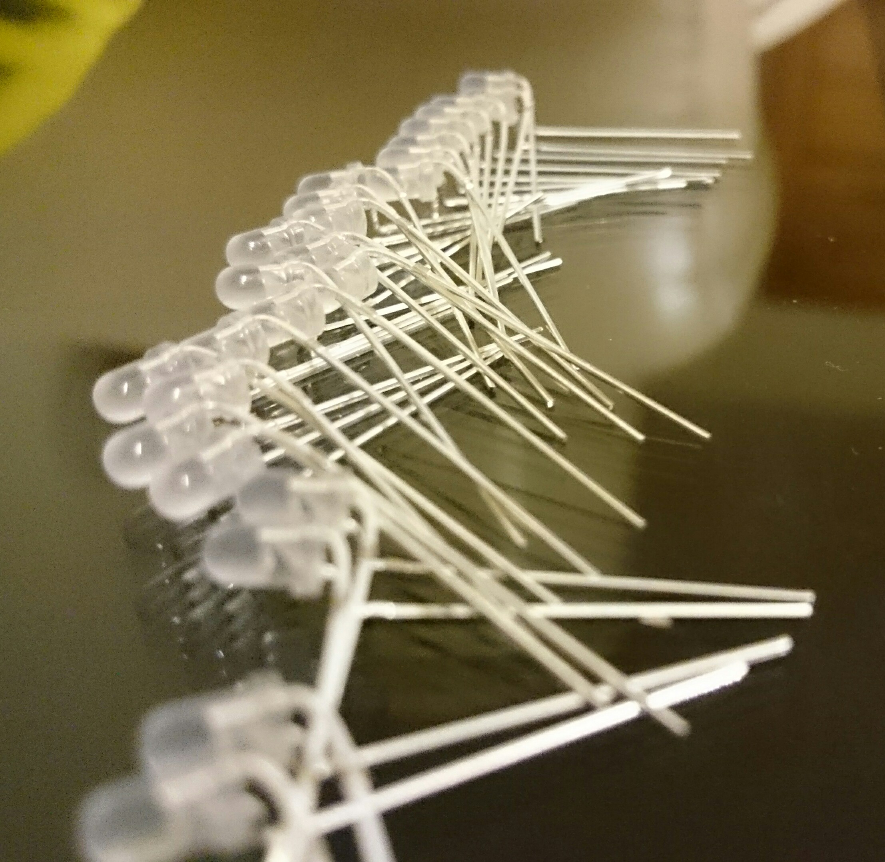

Seminarkursprojekt "LED-Cube"
Der Seminarkurs ist seit dem Schuljahr 2014/15 ein verbindlicher Grundkurs im Land Brandenburg. Er soll der Wissenschaftspropädeutik dienen, also auf das Studium hinführen. Welche Erfahrungen ich mit diesem Fach, im Schwerpunkt Informatik, gemacht habe und mit welchem Projekt ich mich dabei beschäftigt habe, kannst du in diesem Artikel lesen.
Von Kenneth Schröder am 24. Juli 2016 veröffentlicht LEDs als Hauptbestandteil meiner Arbeit
Einleitung
Seit dem Beginn der IT-Geschichte wurden Möglichkeiten gesucht, die Ergebnisse von Berechnungen eines Computers darzustellen. Von Lochkarten, über Kathodenstrahlröhren bis zu den heute weit verbreiteten LCD-Monitoren entstanden im Laufe der Zeit viele, immer fortschrittlichere Arten von Darstellungsmöglichkeiten. Auch wenn die Qualität dieser Geräte immer weiter ansteigt, haben sie jedoch alle eines gemeinsam. Sie basieren auf einer 2-dimensionalen Darstellung. Es besteht die Möglichkeit mit der sogenannten Stereoskopie den Eindruck eines 3-dimensionalen Bildes auf einem flachen Bildschirm zu erzeugen, da diese aber jeweils nur eine Perspektive abbilden können, bieten sie inhaltlich keine Vorteile zu einer einfachen 2D-Darstellung. Nur der Seheindruck ändert sich. Mit dem Aufkommen von 3D-Druckern ist das Bedürfnis nach echten 3D-Darstellungsmöglichkeiten größer als je zuvor. Mit sogenannten Volumendisplays können echte dreidimensionale Bilder im Raum erzeugt werden. Sie basieren auf verschiedenen Prinzipien. Es gibt zum Beispiel die Möglichkeit, eine Projektionsfläche zu bewegen, sodass diese ein bestimmtes Volumen „überstreicht“. Werden verschiedene Projektoren jetzt mit der Bewegung der Fläche synchronisiert, scheint es, als würden die Lichtpunkte im Raum schweben. Diese werden dann auch nicht mehr Pixel, sondern Voxel genannt, eine Mischung aus “volumetric“ (volumetrisch) und “Pixel“. Eine weitere Möglichkeit bieten sogenannte Sphären-Displays, bei denen mehrere Projektoren im Innern einer Kugel Bilder an die Wände des Körpers werfen. Ein leistungsstarker Prozessor sorgt dann dafür, dass die einzelnen Bilder ein einheitliches Bild ergeben, das fast auf der gesamten Kugeloberfläche zu sehen ist. Diese Technologien stecken jedoch noch in den Kinderschuhen, sind noch nicht vollständig ausgereift und erst recht nicht für jedermann zugänglich. Mit meiner Seminarkursarbeit möchte ich eine Möglichkeit vorstellen, ein eigenes (125 Voxel-) Volumendisplay zu entwickeln. Auch wenn dabei Abstriche in der technischen Nutzbarkeit gemacht werden müssen, 3 bekommt man einen eigenen Eindruck von aktuellen Verfahren, die solche Technologien erst möglich machen.
Multiplexing
Plant man den Bau eines Würfelgerüsts, stößt man auf ein Problem. Es scheint, als müssten sowohl Kathode als auch Anode jeder einzelnen LED bis zur untersten Ebene geführt werden. Das würde schnell in einem Kabelchaos enden. Außerdem wäre es sehr unübersichtlich und der Würfel würde durch die vielen Drähte an Eindruck verlieren. Des Weiteren würde die Anzahl der benötigten Anschlüsse exponentiell mit der Kantenlänge des Würfels steigen. Bei einem 5x5x5 Würfel würde man so schon auf 250 Anoden und Kathoden kommen. Betrachtet man eine zweidimensionale LED-Matrix, also z.B. ein Display, fällt auf, dass hier dieselben Probleme auftreten. Um diesen Kabelsalat zu umgehen werden bei Matrizen alle Kathoden einer Reihe und alle Anoden einer Spalte verbunden (bzw. umgekehrt). Legt man aber nun an einer der Anoden eine Spannung an, leuchtet die ganze Spalte, wenn alle Kathoden mit Masse verbunden sind. So ist es erstmal möglich, einzelne Spalten zu steuern. Unterbricht man nun auch die Verbindung zur Masse an einigen Kathoden ist es sogar möglich einzelne LEDs zum Leuchten zu bringen. Neue Probleme entstehen, wenn man versucht mehrere LEDs gleichzeitig anzusteuern. Liegen diese diagonal voneinander, leuchten automatisch auch andere, die evtl. nicht gewünscht sind. Mit einer Methode namens Multiplexing kann dies umgangen werden. Beim Multiplexverfahren leuchtet nur eine Spalte auf einmal. Die Spalten werden aber so schnell “abgelaufen“, dass für das Auge der Eindruck entsteht, die LEDs wären die ganze Zeit an. Ähnlich wie bei der Pulsweitenmodulation, verlieren die LEDs dadurch aber auch an optischer Leuchtkraft. Der Verlust ist abhängig von der Anzahl der zu durchlaufenden Spalten. Das Multiplexverfahren kann auch bei einem LED-Würfel angewendet werden. Hier bietet es sich an, alle Anoden einer Ebene und alle Kathoden einer Reihe zu verbinden. So können die Ebenen über die Anoden durchgeschaltet und jeweils einzelne LEDs über die Kathoden erreicht werden. Die Anzahl der nötigen Anschlüsse bei einem Würfel mit der Kantenlänge x sinkt auf diese Weise von 2∗𝑥3 auf 𝑥2+𝑥. Bei einem 5x5x5 Würfel bedeutet das eine Einsparung von 220 Anschlüssen (250-30).
Schlussbemerkungen
Beim Anfertigen meiner Seminarkursarbeit sammelte ich viele Erfahrungen. Ich habe das Thema gewählt, da ich mich sehr für Informatik interessiere und mich auch mit Elektronik beschäftigen wollte, da die beiden Fachrichtungen in engem Kontakt zueinander stehen. Bei dem Projekt LED-Cube erhoffte ich mir ein Ergebnis, dass mir noch länger Freude bereitet. Desto mehr ich mich mit dem Thema beschäftigte, wurde mir aber auch der Umfang der Arbeit bewusst. Was zuerst relativ leicht verständlich und nur in bautechnischer Hinsicht als eventuell zeitaufwändig erschien, stellte sich als Vollzeit-Recherche heraus. Immer wieder wenn ich mich über einen vermeintlichen Erfolg freuen konnte, stieß ich auf neue Hindernisse, die mich teilweise einige Schritte zurückwarfen. An einem Abend beispielsweise, an dem der Würfel endlich das erste Mal komplett zu funktionieren schien, führte ich Tests durch, um die Helligkeit zu erhöhen. Dabei kam es zu einem Kurzschluss und ein Bauteil wurde beschädigt, was dazu führte, dass der Spannungsregler überhitzte und alle LEDs erloschen. Eben noch kurz vor dem Ziel, war dieser Moment wieder eine Erinnerung daran, wie schnell eine Unaufmerksamkeit bestraft werden kann. Ich denke, das faszinierende an meinem Projekt ist, wie viel man auch als Hobbyprogrammierer mit genügend Zeit und Geduld erreichen kann. Es ist erstaunlich, welche Möglichkeiten auch Einstiegsmikrocontroller, wie ein Arduino, bieten und zu sehen, wie alle Bauteile zusammenarbeiten. Im Nachhinein betrachtet, hat mir die Beschäftigung mit dem Thema viel Spaß bereitet
Zeitraffervideo zum Bauprozess
Hinweis
Dieser Artikel ist nicht vollständig und umfasst nur einen kleinen Teil meiner 30-seitigen Seminarkursarbeit. Falls beim Lesen dieses Abschnittes Ihr Interesse geweckt wurde, kontaktieren Sie mich bitte persöhnlich unter folgender E-Mail Adresse. (E-Mail, kenneth3x10@web.de)